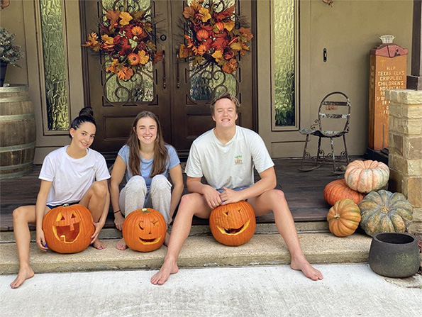

EE.UU.
«Pumpkin Picking» Recoger calabazas los días anteriores a Halloween es una de las costumbres más arraigadas en Estados Unidos. Las familias acuden a las granjas para escoger el mejor ejemplar que luego tallarán y utilizarán para dar a sus casas un aspecto de lo más espeluznante.
El itinerario incluye varias horas de diversión asegurada:
- paseos en tractor
- lanzamiento de calabazas
- rutas temáticas
- degustación de recetas típicas
¿Te lo vas a perder?. Una experiencia inigualable que podrás compartir con tu “host family” y amigos.